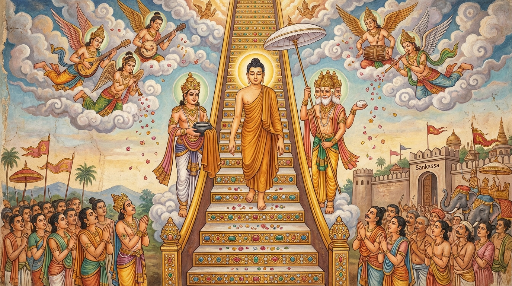

දේවාවරෝහණය: දෙව්ලොවින් නැවත වැඩම කිරීම
මෙසේ අප බුදුහු ශක්රයාගේ පාණ්ඩුකම්බල ශෛලාසනයෙහි වැඩහිඳ සවෙනි වස් කාලයෙහි වස් වසා, මහා පවාරණයට සත් දවසක් ඉතිරිව තිබියදී යට කී යමා මහ පෙළහර දක්නට රැස්ව සිටි මහ පිරිස බලා සිටියදීම, පාණ්ඩුකම්බල ශෛලාසනයෙන් නැගිට මිනිස් ලොවට වඩිනු කැමතිව දෙදෙව්ලොවට අධිපති ශක්ර දේවේන්ද්රයාට ඒ බව වදාළ කල්හි, ශක්ර දේවේන්ද්ර තෙමේ සිතනුයේ, “දැන් මාගේ පුරයෙන් මනුෂ්ය ලෝකයට වඩිනා සර්වඥයන් වහන්සේගේ ගමන දිව්යානුභාවයෙන් මහත් පූජා පෙළහරින් වැඩුව මනාමය. එහෙයින් සත්ත්වයන් සිත් සේ දෙව්ලොව බඹලොව නිවන්පුර වැදීමට උතුම් සද්ධර්මානුශාසනා නැමැති සෝපානය (ඉණිමග) සැදූ මාගේ බුදුරජාණන් වහන්සේට මම ද මේ දෙව්ලොව සිට වඩනා පරිද්දෙන් දිව්ය සෝපානයක් සාදමි” යි සිතා මහමෙර මුදුනේ පටන් සංකස්ස පුර දොරටුව දක්වා විසිතුරු මාණික්යමය වූ සෝපානයක් හා එහි දෙපස ස්වර්ණමය වූ සෝපාන දෙකක් මැවූයේය.
එවේලෙහි මාගේ ස්වාමිදරු වූ අප භාග්යවත් බුදුරජාණන් වහන්සේ බණ අස අසා සිටි සියලු දිව්ය බ්රහ්ම සේනාවට පින් දී, ඉන්ද්රචාපයක් (දේදුන්නක්) සේ සියලු මනුෂ්යයන්ට දෘශ්යමාන වූ සෝපාන තුන අතරෙන් දෙපසෙහි වූ සෝපාන දෙක දිව්ය බ්රහ්මයන්ට හැර, මධ්යයෙහි වූ මාණික්යමය සෝපානයෙන් දස දහසක් සක්වළ සියලු දිව්ය බ්රහ්මයන් විසින් කරන ලද පූජාවන් විඳ, සංකස්ස පුර දොරටුව අසල සැම බුදුවරුන් විසින් අත් නොහරින ලද ස්ථාන වූ ගල්තලා මස්තකයට බැස, එහි සතිස් යොදුනෙක රැස්ව සිටියා වූ මනුෂ්ය පිරිස හා දිව්ය බ්රහ්ම පිරිසට බණ වදාරා, බුදුන් ඇසූ ප්රශ්නයක් විසඳූ ශාරිපුත්ර ස්ථවිරයන් වහන්සේ සියලු ඥානවතුන් කෙරෙහි අග තැන්පත් කොට වදාළ සේක.
